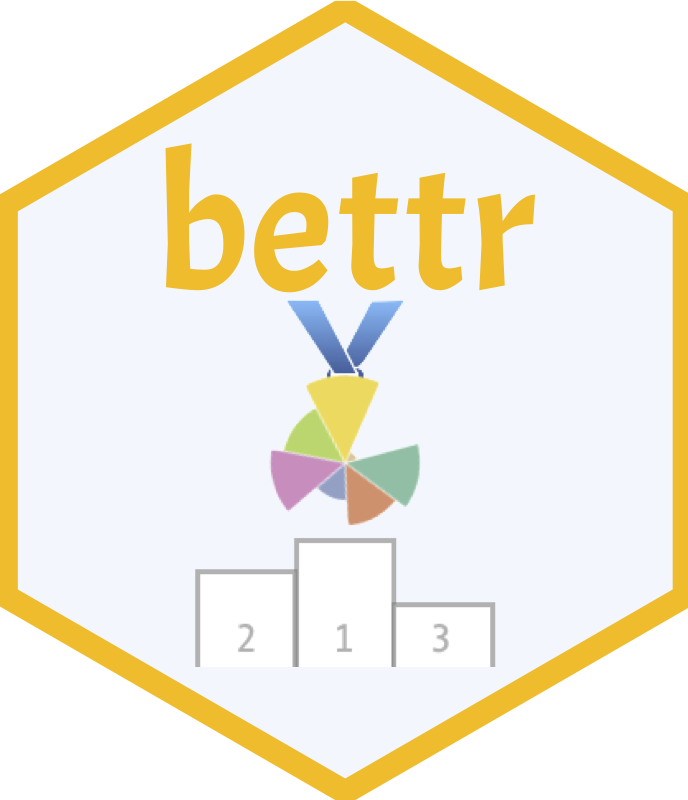
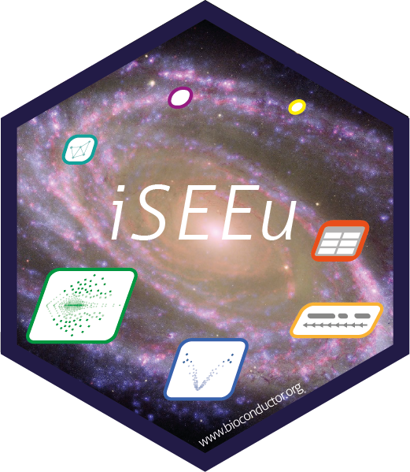
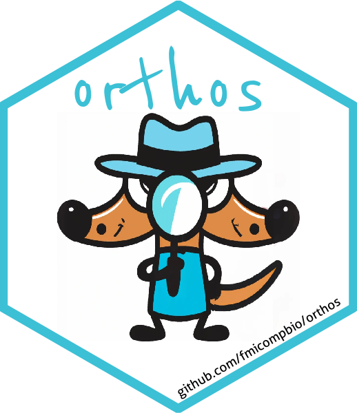
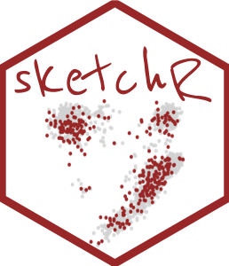
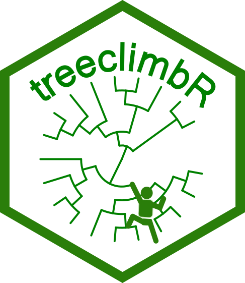
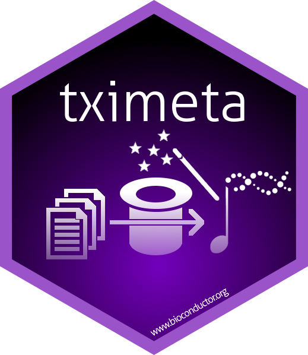

Tools
This page lists tools for which I am involved as a maintainer, co-developer or occasional contributor.
| Package | Description | Role | |
|---|---|---|---|
| alevinQC |

|
A package for generation of QC reports summarizing the output from an alevin or alevin-fry run. Reports can be generated as html or pdf files, or as Shiny applications. | maintainer |
| ARMOR | A light-weight Snakemake workflow for preprocessing and statistical analysis of RNA-seq data. | maintainer | |
| bettr |  | bettr provides a set of interactive visualization methods to explore the results of a benchmarking study, where typically more than a single performance measure is computed. The user can weight the performance measures according to their preferences. Performance measures can also be grouped and aggregated according to additional annotations. | maintainer |
| BiocPkgTools | Bioconductor has a rich ecosystem of metadata around packages, usage, and build status. This package is a simple collection of functions to access that metadata from R. The goal is to expose metadata for data mining and value-added functionality such as package searching, text mining, and analytics on packages. | contributor | |
| compcodeR | A package providing functionality for comparing results obtained by different methods for differential expression analysis of RNAseq data. It also contains functions for simulating count data and interfaces to several packages for performing the differential expression analysis. | maintainer | |
| ConfoundingExplorer | The ConfoundingExplorer R package provides a simple Shiny app for interactively exploring the effect of confounding between a group variable of interest and a batch variable, in terms of the ability to correctly find the variables that are truly differential between the different levels of the group variable. It is mainly intended for teaching purposes and to illustrate important concepts in experimental design, and all analyses are performed using (quite simplistic) simulated data. | maintainer | |
| countsimQC |

|
countsimQC provides functionality to create a comprehensive report comparing a broad range of characteristics across a collection of count matrices. One important use case is the comparison of one or more synthetic count matrices to a real count matrix, possibly the one underlying the simulations. However, any collection of count matrices can be compared. | maintainer |
| dreval | Convenience functions for evaluation and comparison of reduced dimension representations. | maintainer | |
| DuoClustering2018 | Data sets and clustering results from the scRNA-seq clustering evaluation by Duo et al. 2018. | co-developer | |
| einprot |

|
einprot contains a set of workflows for statistical analysis of quantitative proteomics data processed with MaxQuant (LFQ), FragPipe (LFQ), Proteome Discoverer (TMT-labelled), Spectronaut or DIA-NN. | maintainer |
| eisaR |

|
Exon-intron split analysis (EISA) uses ordinary RNA-seq data to measure changes in mature RNA and pre-mRNA reads across different experimental conditions to quantify transcriptional and post-transcriptional regulation of gene expression. | co-developer |
| ExploreModelMatrix | Given a sample data table and a design formula, ExploreModelMatrix generates an interactive application for exploration of the resulting design matrix. This can be helpful for interpreting model coefficients and constructing appropriate contrasts in (generalized) linear models. Static visualizations can also be generated. | maintainer | |
| ez-zarr |

|
The aim of ez-zarr is to provide easy, high-level access and visualization of OME-Zarr filesets stored according to the NGFF specifications. | co-developer |
| ezzarr | The ezzarr R package provides a thin wrapper around the ez-zarr python package for easier use from R. | maintainer | |
| footprintR | footprintR provides tools for working with single-molecule footprinting data in R. These include functions for reading base modifications from bam files or files generated by modkit, efficient representation of such data as R objects, and functions to manipulate and visualize such objects. | co-developer | |
| HDCytoData | Data package containing a set of publicly available high-dimensional cytometry benchmark datasets, formatted into SummarizedExperiment and flowSet Bioconductor object formats, including all required metadata. Row metadata includes sample IDs, group IDs, patient IDs, reference cell population or cluster labels (where available), and labels identifying ‘spiked in’ cells (where available). Column metadata includes channel names, protein marker names, and protein marker classes (cell type or cell state). | contributor | |
| iCOBRA |

|
iCOBRA provides functions for calculation and visualization of performance metrics for evaluation of ranking and binary classification (assignment) methods. It also contains a Shiny application for interactive exploration of results. | maintainer |
| iSEE |

|
iSEE allows the user to create an interactive Shiny-based graphical user interface for exploring data stored in SummarizedExperiment objects, including row- and column-level metadata. The interface supports transmission of selections between plots and tables, code tracking, interactive tours, interactive or programmatic initialization, preservation of app state, and extensibility to new panel types via S4 classes. Special attention is given to single-cell data in a SingleCellExperiment object with visualization of dimensionality reduction results. | co-developer |
| iSEEpathways | This package contains diverse functionality to extend the usage of the iSEE package, including additional classes for the panels or modes facilitating the analysis of pathway analysis results. The package does not perform pathway analysis. Instead, it provides methods to embed precomputed pathway analysis results in a SummarizedExperiment object, in a manner that is compatible with interactive visualisation in iSEE applications. | contributor | |
| iSEEu |  | iSEEu (the iSEE universe) contains diverse functionality to extend the usage of the iSEE package, including additional panel classes and modes allowing easy configuration of iSEE applications. | co-developer |
| jcc | This package calculates JCC scores, which are aimed at detecting genes for which estimated transcript abundances are unreliable, either because of problems in the transcript abundance estimation or because of missing or wrongly annotated reference transcripts. | maintainer | |
| monaLisa | Useful functions to work with sequence motifs in the analysis of genomics data. These include methods to annotate genomic regions or sequences with predicted motif hits and to identify motifs that drive observed changes in accessibility or expression. Functions to produce informative visualizations of the obtained results are also provided. | co-developer | |
| muscat |

|
muscat provides various methods and visualization tools for differential state analysis in multi-sample, multi-group, multi-(cell-)subpopulation scRNA-seq data, including cell-level mixed models and methods based on aggregated “pseudobulk” data, as well as a flexible simulation platform that mimics both single- and multi-sample scRNA-seq data. | co-developer |
| mutscan |

|
mutscan provides functionality for processing and statistical analysis of multiplexed assays of variant effect (MAVE) and similar data. The package contains functions covering the full workflow from raw FASTQ files to publication-ready visualizations. A broad range of library designs can be processed with a single, unified interface. | maintainer |
| orthos |  | orthos decomposes RNA-seq contrasts, for example obtained from a gene knock-out or compound treatment experiment, into unspecific and experiment-specific components. Original and decomposed contrasts can be efficiently queried against a large database of contrasts (derived from ARCHS4, https://maayanlab.cloud/archs4/) to identify similar experiments. orthos furthermore provides plotting functions to visualize the results of such a search for similar contrasts. | co-developer |
| QuasR |

|
QuasR provides a framework for the quantification and analysis of short reads. It covers a complete workflow starting from raw sequence reads, over creation of alignments and quality control plots, to the quantification of genomic regions of interest. Read alignments are either generated through Rbowtie (data from DNA/ChIP/ATAC/Bis-seq experiments) or Rhisat2 (data from RNA-seq experiments that require spliced alignments), or can be provided in the form of bam files. | co-developer |
| Rhisat2 | An R interface to the HISAT2 spliced short-read aligner by Kim et al. (2015). The package contains wrapper functions to create a genome index and to perform the read alignment to the generated index. | maintainer | |
| sketchR |  | Provides an R interface for various subsampling algorithms implemented in python packages. Currently, interfaces to the geosketch and scSampler python packages are implemented. In addition it also provides diagnostic plots to evaluate the subsampling. | maintainer |
| swissknife | Handy code shared in the FMI CompBio group. | co-developer | |
| TabulaMurisData | An R package interface to processed 10x (droplet) and SmartSeq2 (on FACS-sorted cells) single-cell RNA-seq data from the Tabula Muris consortium. | maintainer | |
| TabulaMurisSenisData | An R package interface to processed 10x (droplet) and SmartSeq2 (on FACS-sorted cells) single-cell RNA-seq data from the Tabula Muris Senis project. | maintainer | |
| tidySummarizedExperiment | The tidySummarizedExperiment package provides a set of tools for creating and manipulating tidy data representations of SummarizedExperiment objects. | contributor | |
| treeclimbR |  | The arrangement of hypotheses in a hierarchical structure appears in many research fields and often indicates different resolutions at which data can be viewed. This raises the question of which resolution level the signal should best be interpreted on. treeclimbR provides a flexible method to select optimal resolution levels (potentially different levels in different parts of the tree), rather than cutting the tree at an arbitrary level. | maintainer |
| tximeta |  | Transcript quantification import from Salmon and other quantifiers with automatic attachment of transcript ranges and release information, and other associated metadata. De novo transcriptomes can be linked to the appropriate sources with linkedTxomes and shared for computational reproducibility. | contributor |
| tximport | Imports transcript-level abundances, estimated counts and transcript lengths, and summarizes into matrices for use with downstream gene-level analysis packages. Average transcript length, weighted by sample-specific transcript abundance estimates, is provided as a matrix which can be used as an offset for differential expression of gene-level counts. | co-developer | |
| velociraptor |

|
This package provides Bioconductor-friendly wrappers for RNA velocity calculations in single-cell RNA-seq data. We use the basilisk package to manage Conda environments, and the zellkonverter package to convert data structures between SingleCellExperiment (R) and AnnData (Python). The information produced by the velocity methods is stored in the various components of the SingleCellExperiment class. | co-developer |
No matching items